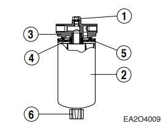

Evaluación de Seguridad Previa
1. Verificación de EPP e Indumentaria Personal
2. Evaluación de Riesgos y Procedimiento Diésel

Figura 0: Grupo Electrógeno Kohler SDMO D330 (Motor Doosan P126TI-II).
🛑 Requisito Previo: Bloqueo y Etiquetado (LOTO)
Antes de intervenir el circuito de combustible (filtros, bomba o inyectores), es estrictamente obligatorio aislar las energías del equipo. Debe cerrar la válvula de suministro del estanque diario de combustible y desconectar el borne negativo de las baterías de 24V. Instale su candado personal y tarjeta LOTO. Esto previene derrames masivos por gravedad y el arranque inesperado del motor al purgar o al "barrar" mecánicamente el equipo.
1. Planificación, Horas-Hombre y Herramientas
| Trabajo a Realizar | Frecuencia Mantenimiento | Dotación Mínima | Duración (h) | Total HH |
|---|---|---|---|---|
| Drenaje de agua del separador y purga | Cada 200 horas | 2 Operarios | 0.5 h | 1.0 HH |
| Reemplazo de cartuchos y limpieza de tamiz | Cada 400 horas | 2 Operarios | 1.0 h | 2.0 HH |
| Desmontaje, prueba y calibración 6 inyectores | 1200 h / Correctivo | 2 Operarios | 3.0 h | 6.0 HH |
* Nota: Las Horas-Hombre (HH) han sido estimadas mediante medición directa y análisis de intervenciones previas en el Laboratorio de Máquinas.
Equipamiento Técnico y Torques Específicos
- Herramientas Genéricas: Llaves punta y corona métricas (10, 12, 14, 17 y 19 mm), destornilladores planos, cubeta receptora antiderrame, paños limpios sin hilachas.
- Herramientas Específicas (Catálogo Fabricante):
- Llave de correa/cadena para desenroscar filtros (Herramienta estándar o Part No. EF.120-208).
- Extractor de toberas e inyectores (Part No. EF.123-082 Nozzle tube extractor).
- Herramienta de inserción de tubos de tobera (Part No. EF.123-082 Nozzle tube insert ass'y).
- Instrumental con Calibración Vigente:
- Banco de Prueba de Inyectores (Pop Tester): Rango 0-400 kg/cm² con manómetro calibrado para contrastar presiones de apertura de 1ª etapa (160 kg/cm²) y 2ª etapa (220 kg/cm²).
- Llave Dinamométrica (Torquímetro): Rango 1.0 a 10.0 kg·m con certificado vigente.
Valores Críticos de Apriete (Torque)
- Tuercas de fijación del porta-inyector a culata (espárragos M6 8.8T): 1.0 kg·m.
- Tuercas de unión de cañería de alta presión (Llave 17 mm): 3.0 kg·m.
- Tuercas de unión de cañería de alta presión (Llave 19 mm): 4.0 kg·m.
- Tornillos huecos (Banjo) de la línea de retorno: 1.0 a 1.5 kg·m.
- Pernos de acople de bomba de inyección: 6.0 kg·m.
2. Procedimiento Técnico Paso a Paso
Fase 1: Análisis de Riesgo, Bloqueo y Drenaje Inicial
- Revisar y firmar el Análisis de Riesgos del Trabajo (ART) y Permiso de Trabajo. Consultar obligatoriamente la Hoja de Datos de Seguridad (HDS) del combustible diésel.
- Ejecutar Protocolo LOTO: Cerrar la válvula de bola en la salida del estanque de servicio diario. Colocar candado y tarjeta de seguridad.
- Desconectar el borne negativo (-) de la batería de 24V para aislar energía eléctrica y prevenir arranque por "barrado".
- Colocar cubeta bajo el prefiltro separador de agua. Girar la válvula manual inferior en sentido antihorario 2 a 3 vueltas.
- Drenar agua acumulada y lodos hasta observar flujo de diésel limpio. Apretar válvula a mano suavemente para no dañar los hilos plásticos.
- Abrir el grifo inferior del estanque de servicio para purgar la condensación de fondo.

Figura 1: Filtro de combustible con separador y tapón de drenaje inferior.
Fase 2: Reemplazo de Filtros y Malla de Bomba (Strainer)
- Limpiar cuidadosamente la cabeza del soporte del filtro de combustible para evitar ingreso de partículas.
- Utilizando la llave de cinta, desenroscar el cartucho usado girándolo en sentido antihorario. Desechar el sello de goma viejo.
- Limpiar la superficie de asiento con un paño limpio sin hilachas.
- Lubricar la junta de goma del nuevo cartucho con diésel limpio. Llenar el nuevo filtro con combustible antes de instalarlo para minimizar la entrada de aire al sistema.
- Enroscar el filtro a mano hasta hacer contacto y ajustar 1/2 a 3/4 de vuelta adicional. No sobreapretar.
- Extraer el perno banjo de la entrada de la bomba de alimentación (feed pump). Retirar el tamiz de malla metálica (strainer), sopletear con aire comprimido, lavar en diésel e instalar con golillas de cobre nuevas.

Figura 2: Bomba de alimentación de combustible, cebador manual y ubicación del tamiz interior.
Fase 3: Mantenimiento y Calibración de Inyectores
- Desconectar los tornillos huecos de la línea de retorno superior.
- Aflojar las cañerías rígidas de alta presión en el inyector y bomba usando llave de 17/19 mm. Tapar cañerías con protectores plásticos.
- Retirar las tuercas del flange de fijación (M6). Extraer con extractor especializado el porta-inyector de la culata.
- Verificar que los 5 orificios de la tobera estén limpios. Montar inyector en el Pop Tester. Comprobar estanqueidad a 200 bar (cero goteo) y validar presión de apertura inicial a 160 kg/cm² y secundaria a 220 kg/cm².
- Reinstalar inyector con anillo de sello de cobre nuevo (0.5 mm) en el fondo del alojamiento.
- Apretar tuercas de sujeción a culata con torquímetro a 1.0 kg·m.
- Conectar cañerías y dar torque a 3.0 a 4.0 kg·m según la tuerca. Conectar línea de retorno (1.0 - 1.5 kg·m).

Figura 3: Conjunto porta-inyector de 2 resortes y tobera de inyección directa.
Fase 4: Sangrado, Purga y Gestión Ambiental (MARPOL)
- Abrir la válvula de suministro del estanque diario.
- Aflojar los tornillos de purga de aire ubicados en la parte superior del cuerpo del filtro y en la bomba de inyección.
- Desenroscar y accionar el bombín cebador manual (priming pump) de forma repetitiva.
- Bombear de manera continua hasta que el diésel fluya absolutamente libre de burbujas por los tornillos de sangrado.
- Cerrar firmemente los tornillos de purga mientras se mantiene bombeando, luego asegurar la tapa del cebador manual en su posición hermética.
- Gestión de Residuos: Todo filtro, sello y paño contaminado con hidrocarburos debe ser contenido en bandejas y dispuesto en tambores de Residuos Peligrosos (RESPEL). Conforme al Anexo I del Convenio MARPOL, queda estrictamente prohibido su vertimiento a sentinas, alcantarillas o canales abiertos.
✅ 3. Lista de Verificación de Re-comisionamiento
Valide visualmente cada paso de esta cuadrícula antes de declarar el equipo operativo y retornar el mando al panel.